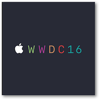
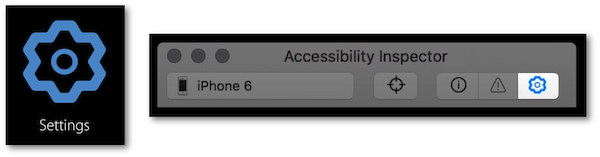

WWDC 2016 : Auditing Your Apps for Accessibility
This video available on the official Apple website (session 407) aims at defining and using the Accessibility Inspector tool of Xcode, based on good practice implementation.


Various contents and their video timelapse are indicated hereunder:
-
Accessibility Inspector (09:38)
-
Audit (11:21)
-
Inspection (20:30)
-
Settings (28:33)
At the end of this presentation, it's highly recommended to take a look at the Accessibilty Inspector new features introduced in Xcode 11 so as to be as up to date as possible.
Thereafter, the selection of a title will give rise to the video playback on the Apple website directly at the proper moment.
Accessibility Inspector (09:38) #
Overview of the tool pointing out the themes to be developed : audit, inspection and settings.

Audit (11:21) #
This part contains a demo (12:22) that highlights the way to find out a solution for the problem detected by the tool (14:24) while providing a bug report (17:07).

A complementary manual audit is also mandatory to avoid bypassing some kind of hidden problems (18:55).
Inspection (20:30) #
This feature explanation is build on an example (21:58) that points out possible kinds of problems in an app like:
-
Inappropriate sequencing of elements during the navigation. (23:11)
-
Abstruse description of an element. (23:34)
-
Improper action of an element. (24:02)
The presentation of the view hierarchy of this feature (24:40) comes along with an important point dealing with CALayer elements that aren't taken into account by VoiceOver.

Settings (28:33) #
Last but not least, this feature (highlighted thanks to a demo - 30:25) avoids switching back and forth between changing some accessibility settings and verifying the result on the app.
